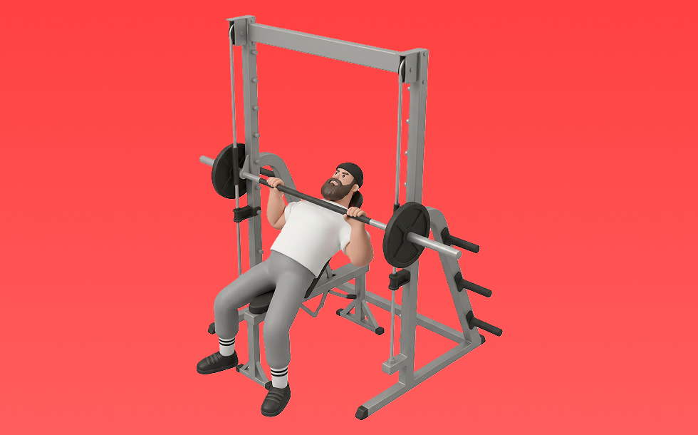

スミスインクラインベンチプレス

スミスインクラインベンチプレスとは、スミスマシンを使ってベンチ角度を上げた状態で「押す」動作で胸上部（大胸筋鎖骨部）、肩前部（三角筋前部）、腕（上腕三頭筋）を鍛える種目です。バー軌道が固定され、補助なしでも追い込みやすいのが特徴で、ベンチに仰向けになり、胸に下ろして押し上げる動作を繰り返します。胸上部の厚みづくりや上半身の押す力の向上が期待できます。
- 対象部位
- 胸
- 器具
- スミスマシン
- 記録形式
- 重量・回数
- 別名
- スミスインクラインベンチ / スミスインクライン / smith incline bench / smith incline bench press
YouTube動画
-
【筋トレ】大胸筋の上部に効く！山本義徳氏お勧めのインクラインベンチプレス
-
スーパースミスインクラインベンチプレス基礎編やり方
-
【大胸筋上部筋トレ】インクラインベンチプレスの正しいフォーム・やり方 | 「肩に痛みがある」「角度が知りたい」という方はぜひ！
-
【胸トレ】大胸筋上部をつけろ！筋トレ初心者にオススメのインクラインスミスベンチプレス徹底解説！
-
【初心者必見】スミスマシンを使って厚い胸板を！インクラインベンチプレス
-
【筋トレ】スーパースミスマシンの向きはどっちが正しい？種目別解説！【胸編】
-
大胸筋上部の厚みをつけたい人必見！スミスで行うインクラインベンチプレスのわかりやすい解説！
-
【大胸筋上部を最速で発達させる】IFBB PRO寺島遼が実践するインクラインベンチプレスの極意。
-
【大胸筋】スミスマシンで胸を全部鍛える3種目｜上部・中部・下部を完全攻略
-
【筋トレ悪いフォーム解説】大胸筋上部に"乗せる"スミスマシンを使ったインクラインベンチプレス！
-
【筋トレ】インクラインベンチプレスのやり方を徹底解説！ベンチの角度やセットする手順、大胸筋上部に効くフォームやコツ等を実演
-
【胸トレ】大胸筋上部が劇的に発達するインクラインスミスベンチ徹底解説
-
【筋トレ】大胸筋をデカくしたい方必見！スミスマシンで行うフラットベンチプレス
-
【筋トレ】 スミスマシンを使ったベンチプレスのやり方を解説！
-
大胸筋を大きくするなら、この2種目！フォームとメニューを解説
YouTubeショート
-
インクラインスミスベンチプレス79キロフォームはこれで良いでしょうか？ #筋トレ #ベンチプレス #インクラインスミスベンチプレス
-
インクラインスミスベンチで大胸筋上部を怪我なく効率的に鍛えていこう💪
-
スミスマシンインクラインベンチプレス#筋トレ #胸トレ #shorts
-
みなさんはインクラインベンチプレスやってますか？こんがりがしっかり大胸筋に効くトレーニングをレクチャーしてくれました！#volix #胸トレ #ちょこっとおしい #大胸筋 #volixgear
-
綺麗な大胸筋を作ったスミスインクラインプレスのやり方※エゴイスト
-
[SYNERGY. Fitness Studio] スミスマシンベンチプレスのやり方 #筋トレ #エクササイズ
-
最短で胸をデカく！！インクラインベンチプレス解説🔥#筋トレ #マッチョ #胸トレ#ベンチプレス
-
ベンチプレスの正しいやり方を紹介 #筋トレ #フィットネス
-
【胸トレ】スミスインクラインプレスこれで効くわ #胸筋トレ #インクライン
-
【頭で理解して活用しよ】スミスマシンの向き問題コレですっきり解決！スミスはめちゃくちゃ使えるから頭に入れて使っていこ！#筋トレ初心者 #筋トレ好きと繋がりたい #スミスマシン #フィジーク
-
【胸トレ】すぐにできるスミスで意識するポイント！ #shorts
-
1分でわかる！胸を鍛えるインクラインベンチプレス解説
-
スーパースミスインクラインベンチプレス基礎編やり方3
-
【胸トレ】大胸筋上部を鍛えるスミスマシンインクラインプレスのやり方解説
-
初心者にありがちなミス スミスマシン ショルダープレス🏋️♀️
-
【ジムにこういう奴おらん？】スミスのベンチをベンチプレスって言う奴
-
【胸トレ解説】インクラインスミスプレス(収縮) #筋トレ解説 #胸トレ #胸筋トレ
-
【胸トレ】スミスマシンベンチプレスのやり方解説 #筋トレ #筋肉 #トレーニング #胸トレ
-
【SGIR】胸トレ3種目だけなら何選ぶ？
-
正しいショルダープレス4つのポイント #筋トレ
-
【肩トレ】スミスマシンショルダープレスのやり方解説
-
ダンベル・インクラインベンチプレスの正しいやり方 | ボディビル日本チャンピオンが解説 #shorts【ビーレジェンド プロテイン】
-
自己ベスト80kgなるか、、、？ #Shorts #筋トレ女子 #ベンチプレス
-
マシンを使ったショルダープレスのコツ
-
インクライン何度が正解？世界王者の答えはこの角度
-
インクラインベンチプレス反り過ぎて最早フラットな様子 #shorts
-
【ベンチプレス】背中に力を伝えるブリッジ強化法 #筋トレ #レッグドライブ
-
持田選手にダンベルインクラインプレスについてレクチャーしていてもらいました！次はどの種目の解説をやってほしいかコメントしてね！#筋トレ #volix #トレーニング #ちょこっと惜しい #胸トレ
-
正しいダンベルベンチプレス5つのポイント 【筋トレ】
-
初心者向け🔰チェストプレスのワンポイントアドバイス！ #筋トレ
-
みなさんはベンチプレスどのようにされてますか？？今回は持田選手がベンチプレスを伝授！次はどの種目の解説をやってほしいかコメントしてね！#ちょこっと惜しい #筋トレ #volix #トレーニング
-
【ベンチプレス】肩を怪我せず大胸筋を鍛える正しいフォーム解説
-
今すぐにやめた方がいいインクラインダンベルプレス #筋肉
-
細マッチョの胸トレはベンチプレスだけで十分🏋️ #筋トレ #宅トレ #細マッチョ
動作方法
- 安定した姿勢を作り、肩と体幹を固定する
- 狙う部位を意識して、反動を使わずに押す
- 可動域を保ちながら、ゆっくり元に戻す
動作ポイント
- 肩をすくめない
- 手首を寝かせすぎない
- 反動を使いすぎない
ワンポイントアドバイス
- 最初は可動域を優先してフォームを固める
- 肩に違和感がある日は重量を落として調整する
目的別回数設定
目的や体力に応じた一般的な目安です。無理のない範囲で調整してください。
- 筋力アップ
- 1〜5回
- 筋肥大
- 6〜12回
- 持久力アップ
- 13〜20回
YouTube動画について
動画はYouTubeの公開情報をもとに表示しています。内容は投稿者によるもので、Biggrによる監修ではありません。
アプリを入手
筋トレやトレーニングの記録はBiggrにお任せください。今すぐ無料で使い始められます。